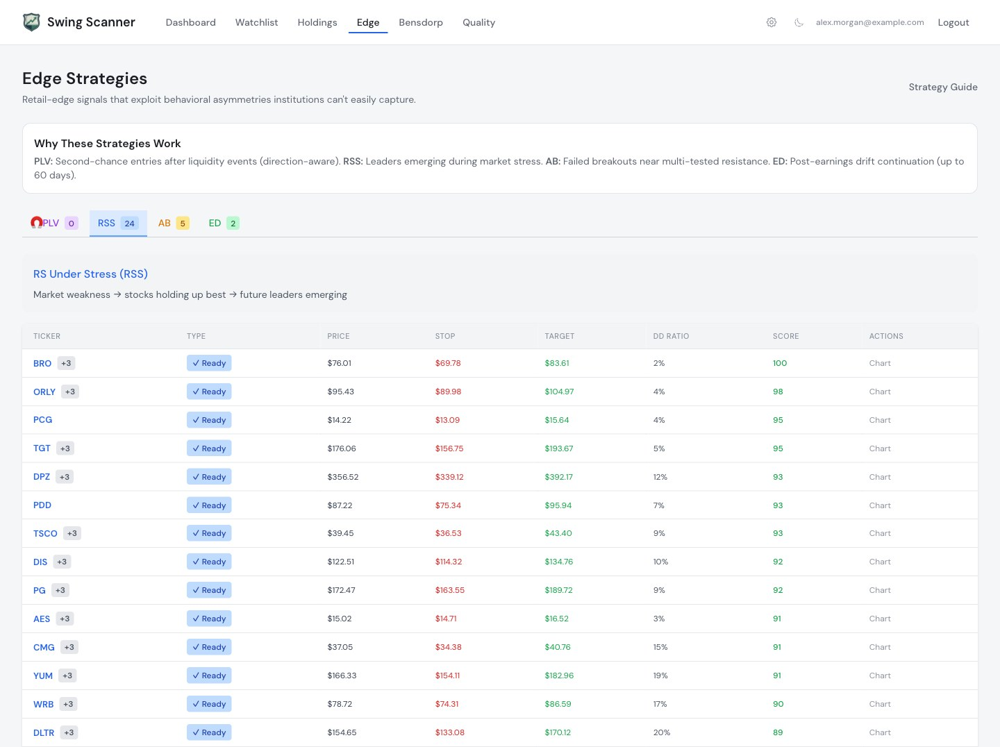
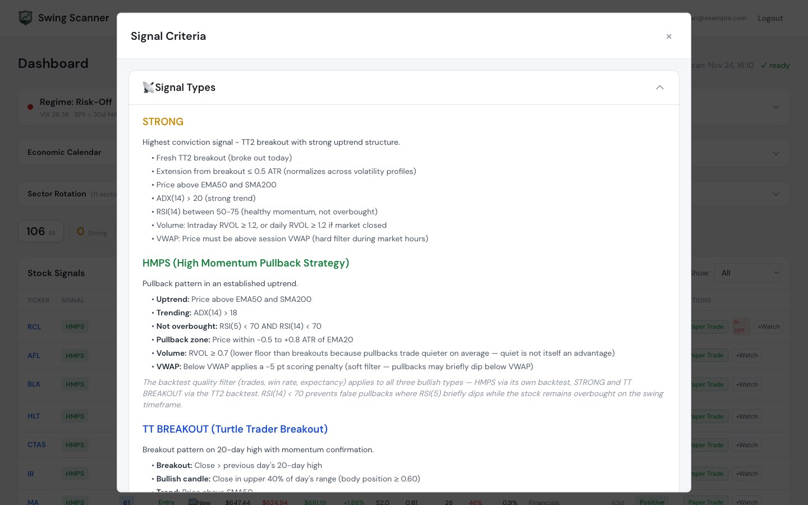
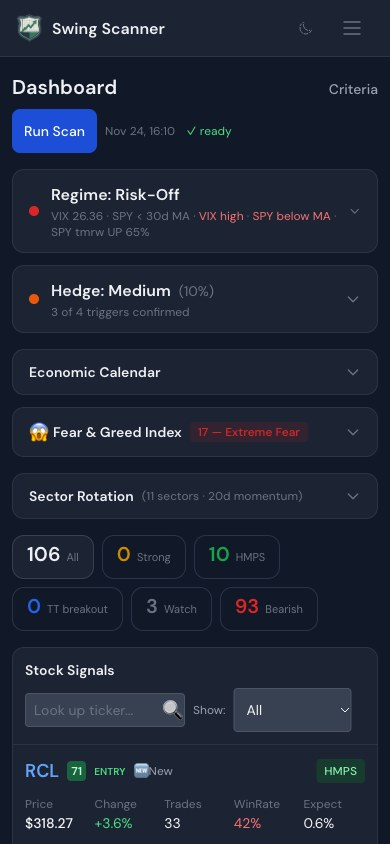
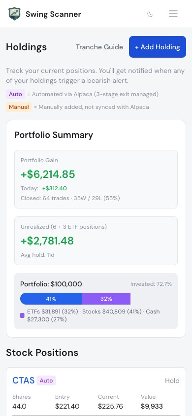

A Strategy That Ate the Day
Swing trading rewards discipline more than insight. The rules were clear: only trade when the market is healthy, look for strong stocks that pull back or break out on volume, size each position to its risk, take partial profits at a target, and trail a stop on the rest. Doing that by hand meant checking charts, volume, earnings dates, sector strength and market conditions across a handful of sites, then entering orders and moving stops one at a time.
The manual process failed in predictable ways. Setups were missed because nobody was looking at that moment. Stops lagged because updating them was tedious. And the rules bent under pressure, which is exactly when they matter most.
Design goal
Turn a strategy that lived in two people's heads and a dozen browser tabs into a product that applies the rules the same way every time, for any user, and shows its reasoning so a person can still overrule it.
From Scan to Exit, End to End
The platform follows the same workflow we used to run by hand, from market check to final exit:
- Read the market. A regime check (volatility, the S&P 500's trend) decides whether new positions are allowed at all, and a graduated hedge can offset risk when conditions turn.
- Scan. Every 15 minutes during market hours, the S&P 500 and Nasdaq 100 are checked against pullback and breakout patterns, plus a set of additional strategies on their own page.
- Score and explain. Each signal gets a 0–100 score and a letter grade built from its backtest, volume, trend, relative strength, earnings and sentiment, shown alongside the evidence behind it.
- Guard. Hard rules block entries near earnings, in extreme volatility, after a run of losses, and on wash-sale conflicts.
- Enter and manage. Positions open through the Alpaca brokerage API and exit in three stages: half at the first target, a quarter on a trailing stop, and the last quarter held against a profit floor. Stops are real broker orders, re-priced automatically.
- Notify. Entries, exits and warnings go to each user's Telegram.

The dashboard: market regime and hedge level at the top, then every signal with its grade, score and status.

Additional strategies live on their own page, separate from the signals that can open positions.
Designing a Product, Not a Script
It started as a tool for two people, but I designed it as a product for anyone who wants to trade a disciplined strategy without living in a dozen browser tabs. Each user signs up with their own account, connects their own brokerage (keys are stored encrypted), and gets their own watchlist, risk limits, strategy switches and Telegram alerts. An admin layer sits on top for operating the service. It was built multi-user from day one, with the start of a subscription flow in place, so opening it up is a business decision rather than a rebuild. I've held back from inviting more users because a tool that places trades for other people starts to look like investment advice, which is a legal question, not a design one.
Designing for that wider audience shaped every screen. Experienced traders need dense, changing information that is quick to scan; newer ones need to understand why the system did what it did. The answer to both was the same: don't simplify the strategy, make its decisions easy to see and audit.
Show the Why, Not Just the What
A score alone invites blind trust. So every signal row carries its evidence next to it: its backtest record (trades, win rate, expectancy), volume, momentum, news sentiment, days until earnings, and the stop and target it would use. A Criteria popup on the dashboard documents every rule in plain language and is updated whenever the logic changes. It loads straight from a single criteria page, so there is only one copy of the rules to keep accurate.

Positions as a Process
A position isn't a single row with a profit number; it moves through stages. The Holdings page shows where each position is in its exit plan, where its stop sits, and what happens next, with a built-in guide to the tranche strategy.

Holdings, with each position's stage and next exit. Account figures and positions in these screenshots are sample data.
Always On, Including on a Phone
Markets move during the day, so the whole app works on a phone, in light and dark mode. Live prices stream in over WebSockets, and a Figma library of 16 components in both themes kept the screens consistent as features kept being added.


The same product on a phone, in dark and light mode.
Controls That Respect Risk
Every automated behavior has a switch, per user and per strategy: entry thresholds, position sizing, loss limits, hedging. Safety stops don't quietly undo themselves. A pause after a losing streak stays on until a person clears it.

A Designer With an AI Engineering Team
I haven't written production code in years. For this project, Claude Code wrote the code: a Python backend with a PostgreSQL database, the scanner and trading engine, more than 130 API endpoints, and the web front end. I worked the way I would with an engineering team. I wrote the product requirements, designed the experience, reviewed every change, and shipped through GitHub to Railway, where each push deploys automatically.
The speed was remarkable. Over 11 months the project grew to more than 1,000 commits and about 66,000 lines of code. Features that would have been a quarter-long roadmap item for a team took an afternoon.
But speed moved the bottleneck. Writing code stopped being the hard part. Knowing whether the code, and the claims about it, were actually right became the hard part.
Real Money, Real Lessons
I run the platform on a real-money brokerage account. That changes how you look at everything: a bug isn't a broken screen, it's a position with no stop. And early live results lagged the market. So a large part of this project became research: finding out why, with the same rigor I'd bring to a user research program.
The Biggest Problem Wasn't the Strategy
The scanner looked at the day's price bar while it was still forming and entered the moment a pullback qualified. On a day that kept falling, that meant buying near the top of the day's range. On the same 40 signals, with identical exit rules and only the entry price changed, live entries averaged −3.6% per trade; entering at the day's close would have averaged +0.1%.
The fix that captured most of that, resting limit orders, was one I chose not to ship. Scans run every 15 minutes, so orders waiting to fill would have turned a simple, stateless system into one that has to reconcile pending orders against new signals across restarts and deploys, on a live account. Less money on paper, much less risk in practice. That is a product call, not a math problem.
Measuring What We Believed
Several features we had assumed were helping were tested properly and turned out not to be:
The 0–100 signal score
Across 17,146 backtested trades from 2012 to 2026, high-scoring signals did no better than low-scoring ones.
The machine-learning market predictor
Tested walk-forward over 2013–2026, it was right 53.8% of the time, versus 54.8% for simply always predicting "up." Its most confident calls were its worst.
Pausing after losing streaks
Trades taken after a bad run did slightly better, not worse, because losing streaks tend to coincide with selloffs that pullback entries then benefit from.
Analytics vs. live trading
The analytics, the backtest and the live system had three different implementations of the exit rules. The analytics split positions differently from live and had silently frozen for three months. They now share one implementation, so what we measure is what we trade.
All results are from backtests and live logs on this project; they describe this system, not markets in general.
When the AI Is Confidently Wrong
The most important thing I learned is how an AI collaborator fails. It rarely writes broken code. It writes a plausible explanation and states it as fact. A backtest once showed that widening a trailing stop improved results by about 29%. It turned out the simulation was peeking at a price it could not have known in real life; corrected, the gain was about zero. Other confident estimates, like how much memory the app would save, missed by 3 to 10 times.
| What the AI estimated | What we measured |
|---|---|
| Wider trailing stop: about 29% better results | About zero, once the simulation stopped using future prices |
| Scan data uses 200–350 MB of memory | About 24 MB |
| Prediction model uses 30–80 MB | 13–25 MB; one of its three models was never installed |
| Two server settings would cut memory meaningfully | About 0 MB |
None of this is a reason not to use AI. It's a reason to manage it like a fast, brilliant, overconfident new hire. I turned what I learned into written working rules that the agent loads at the start of every session:
- No estimate unless it was measured. "Unknown, and here is how to measure it" is an acceptable answer.
- Build the instrument first. A diagnostic page or a log line settles a question in one deploy; reasoning about it often doesn't.
- Read before you recommend. A proposed "safe" fallback, once read, would have cancelled a position's stop.
- Separate diagnosis from proposal. Findings first, then a decision, never both in one breath.
- Ask for the counter-test. The best single question was "what could make this wrong?" It caught errors that self-review didn't.
These are the same habits that make good UX research credible: separate observation from interpretation, state your sample size, and don't let a compelling story outrun the evidence.
What I'm Taking Forward
Judgment Is the Scarce Resource
When an AI can build almost anything quickly, the value moves to deciding what's worth building, what is actually true, and what risk is acceptable. Those were always design and product leadership skills; AI makes them the whole job.
Design the Evidence, Not Just the Interface
The most useful screens I built weren't the prettiest ones. They were the diagnostic pages that let anyone check, in a browser, whether the system was doing what we believed.
Explainability Builds Calibrated Trust
Showing the reasoning behind every signal didn't just help us trust the system. It showed us exactly where not to.
Swing Scanner is a personal project. Nothing on this page is investment advice, and past or backtested results don't predict future returns.